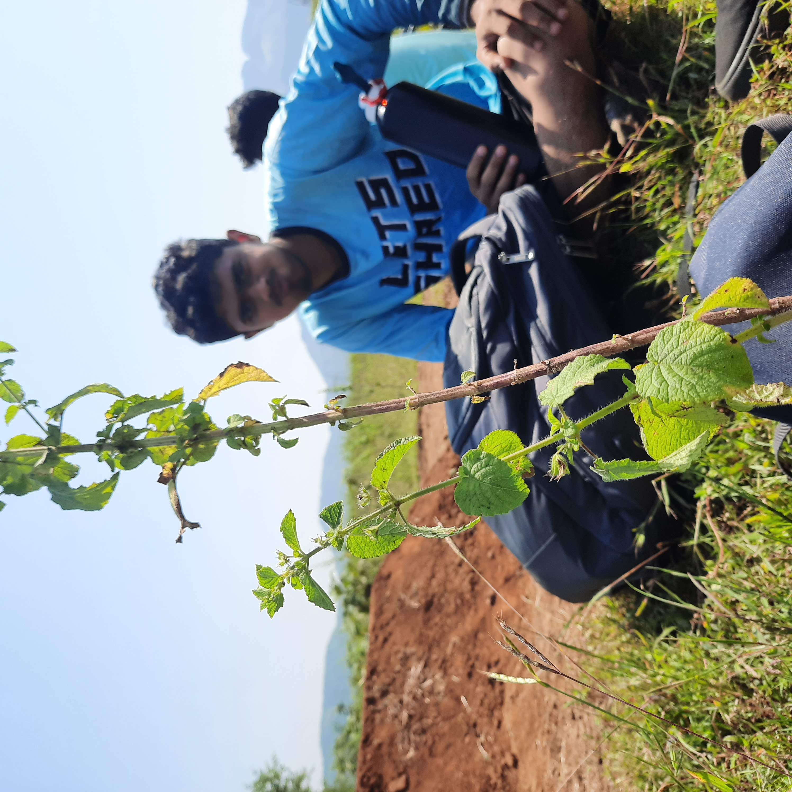
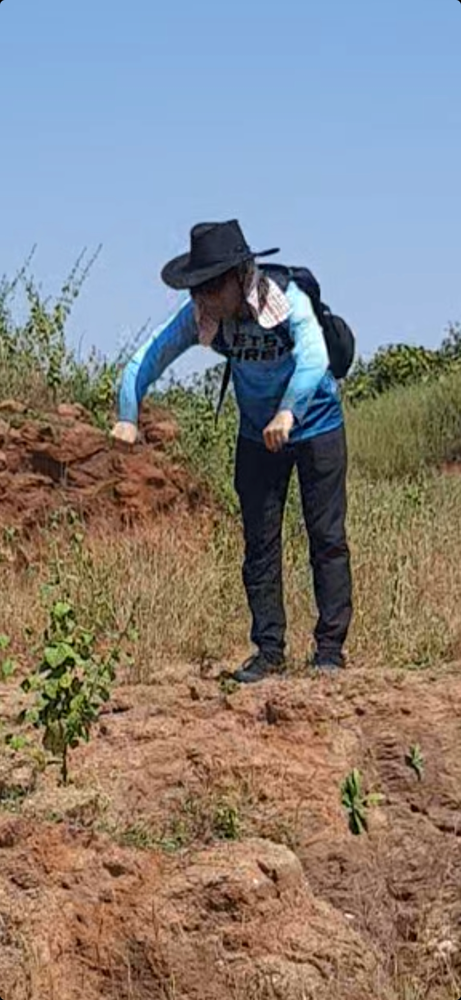
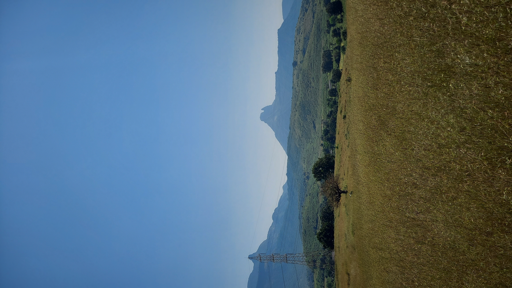
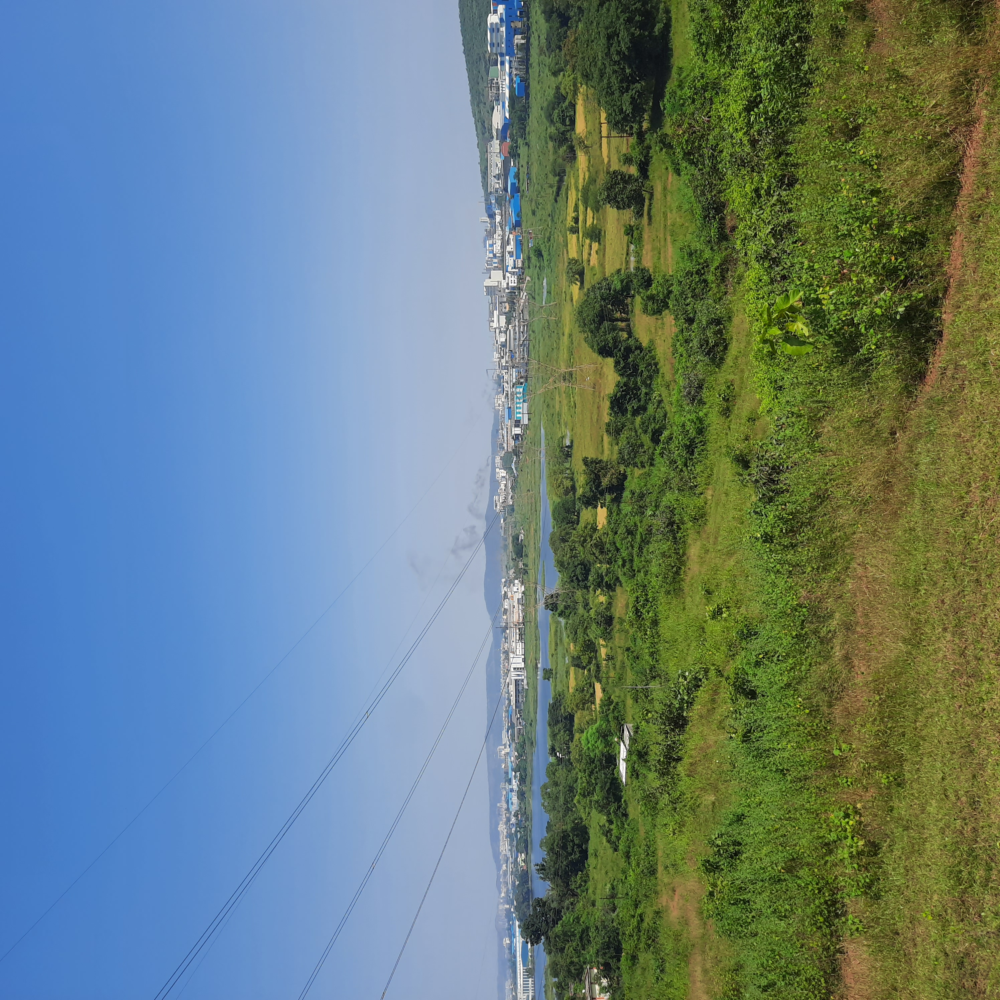
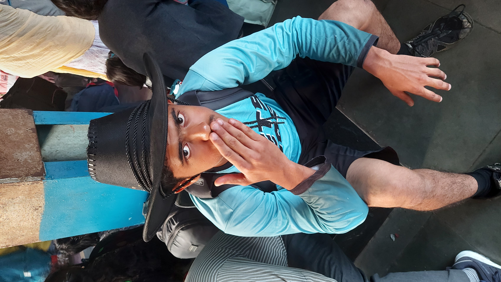

2022-10-30
23rd October 2022:
Video called Nida on my way to Dadar station - roughly 6am to 7am. I met Siddha there. I read Efficiency by Wallstreet Playboys on our way to Ambernath Station. Savio , Siddha , and I took a rickshaw to Sri ‘s shared location. This was for Prajwal , at the trailhead. After lots of confusion, we navigated our way to the place we borrow our tools from ever since they got stolen. This made for exhausting, but in hindsight, entertaining calls to Prajwal and his father. We initially asked him to come to the village, and just as he was about to leave the trailhead, a wild Sri appeared and said his location is correct - That location being given to him was intentional.
After all of us gathered on the trail, we found the jump broken. Not completely, but undid quite some work and LOTS of compacting. It seemed like authorities were curious as to the contents of this mound of soil and the sacks inside. We came to this conclusion also because they hadn’t destroyed the berms. Once they figured it was just that - a mound of soil. This was extremely demoralizing. Savio decided to rebuild it and hope for the best, hoping that their curiosity has been satisfied.
Savio refilled 2 sacks, then it was mud on top of the sacks. As usual, I dug and Savio “engineered” the jump - he decided the shape of the lip and landing and laid soil accordingly. Siddha, Sri, and Prajwal were dialing the S berm transition. In the process of digging, my mattock cracked. Because we were using borrowed tools, and I have a technique that uses few but powerful reps of digging that many deem inefficient, I stopped using it. We moved on to this tool, I don’t know what to call it. I hated it. I legit sat down on the soil and dug like that because standing and digging was… useless? My work rate reduced dramatically but so did the need for soil and I was comfortable sitting and digging.
By the time we were done, so was the transition. I did not try that out. But both Siddha and Prajwal thought it was sorted. The jump resembled our very first jump in Manori. The lip is not curved and does not throw you up. It forces you to learn to bunnyhop or learn the correct jumping technique. I don’t particularly enjoy it, but it will teach the tribe to jump, and we can move to bigger and better things soon. Delayed Gratification. Speaking of, bigger things. Next week, step down. This one will mostly be focused on height. I don’t know actually, haven’t built a step down before. advise in the comments. We are using an existing rock and downslope, smart work bete.




To note, Savio does not like songs playing when building. Cue Savio comparing the building process to meditation. He actually hasn’t said that, but I imagine he may. We walked to give the tools back. We mentioned to the owner that a mattock has a crack. He seemed to not be bothered by it because he mostly does not have a lot of digging to do so asked us to bring a new rod if we’ll need it next week or not worry about it. Then Hitesh called - he had a late work night and couldn’t join us in the morning. Kashish was busy with ghar ka Diwali preparation.
He asked if we wanted to go to McDonalds. We thought the building would take the whole day and were surprised to have finished it early and so obliged. This was a mistake, on my part. The McD trip did not have a significant value add. It was not worth the hour or 90 mins we spent there. No significant entertainment bonding or memories. Should’ve been to the station directly. Also, neither Savio nor Siddha knows how much honey to put on pancakes. Siddha got them. Bhai, ready-made mix? Come on. I did give Hitesh ‘The Choice’ which is a Holocaust survivor’s autobiography.
On our way back, they chose to go to the second class coach and me to the first class. As soon as it started moving, I remembered the asshole at Dadar station. He has caught me twice for not having a ticket. I got off at the next station and asked Siddha to “come out”. That was the wrong verbiage, I should have asked him to lean out so I can join them. Both of them thought I was caught and just got off the train. Cue 30 mins of waiting for the next one because there was too much gardi on the train that came next.
Siddha and I took a slow train from Andheri because a certain special snowflake needed to be dropped. I don’t blame though, this was his first time using the train independently. I understand his predicament. Savio helped me when I was ignorant. He is a big reason I am competent enough to cheat the railway system, and for that, for him, I am grateful.
Raat ko, my father smoked in the main bedroom, which did not clear despite waiting for 30 mins. When the other room’s AC did not work, I felt extremely frustrated. I was also feeling sad because it was finally hitting me that I won’t see people I value for a long time when I leave for further study, among other more intimate things. This was at 8:30pm.
So I took ghar ka chaavi from Mother and went to Arya ‘s. He welcomed me. The asshole knew something was up as soon I asked him if I can sleep at his. We spoke and cried. I journaled a lot and cried a lot. Enough to make Arya cry, which I consider an achievement. My journalling then and today (I write this on Monday, the day after) has been weirdly productive in changing my perspective from sadness-inducing to forward-looking optimism. Arya is precious. Best bhai. Bohot pyaar <3. I must have slept at 10. I woke up at 8/8:30 am aaj. Kya sexy neend. The fact that I can actually have good sleep at his house shows just how much of a second house Arya’s place is for me. Bhai khaali application ka kaam karle bas.
Vihaan, you have competition. Actually no, he surpassed you in the second house thing a long time ago. I am grateful to both of you.
flying kisses
